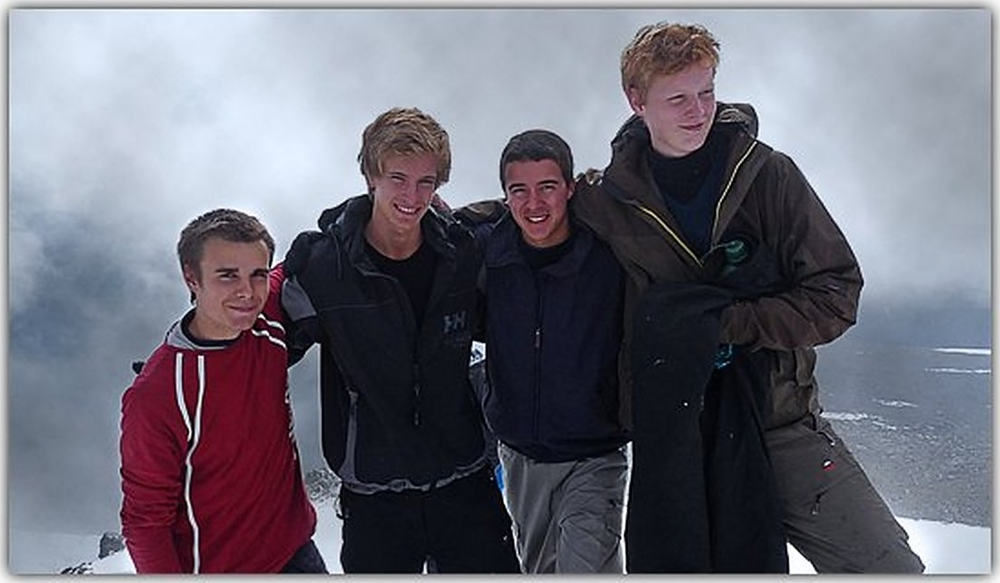

Om oss
Fyra grabbar och ett projektarbete
Vi hade aldrig vandrat i fjällen innan. Våren 2009 bestämde vi oss för att bestiga Kebnekaise – och gjorde en hemsida om det.

Team KAJSE
Nyfikna nog att prova
Vi är fyra äventyrslystna grabbar som gick sista året på NV-programmet på Samskolans gymnasium. Våren 2009 bestämde vi oss för att bestiga Kebnekaise under sommaren som en del av vårt projektarbete i skolan. Tack vare vår hängivne handledare Ola Larson blev det möjligt.
Utan tidigare erfarenhet av fjällvandring besteg vi Kebnekaise i augusti och samlade på oss nya upplevelser från fjällvärlden. Den här sidan gjorde vi för att dela med oss av vad vi varit med om och ge tips, råd och inspiration till andra som också vill ut i fjällen.
- Ossian Mauritzson
- Simon Nelson Landén
- Marcus Lilliequist
- Daniel Wedenborg
Om sidan
Från 2010 till idag
Sidan publicerades första gången 2010 och har sedan dess varit en liten tidskapsel i den svenska fjällwebben – komplett med väderwidgetar, tidningsklipp och tabellayout.
År 2026 moderniserades sidan med responsiv design, semantisk HTML och bättre tillgänglighet. Innehållet – guiden, dagboken och fotografierna – är detsamma, med undantag för uppdaterade topphöjder och en påminnelse om att kontrollera aktuella förhållanden.
Den ursprungliga sidan finns bevarad i sin helhet. Där kan du fortfarande läsa de gamla nyheterna från 2010–2012 och se sidan precis som den såg ut då.
Besök den ursprungliga sidanTack till: Ola Larson, vår handledare, och alla som hjälpte oss på vägen – inte minst personalen på Kebnekaise fjällstation.
”Tunga ben har kompenserats med obetalbara syner som man bara kan drömma om.”